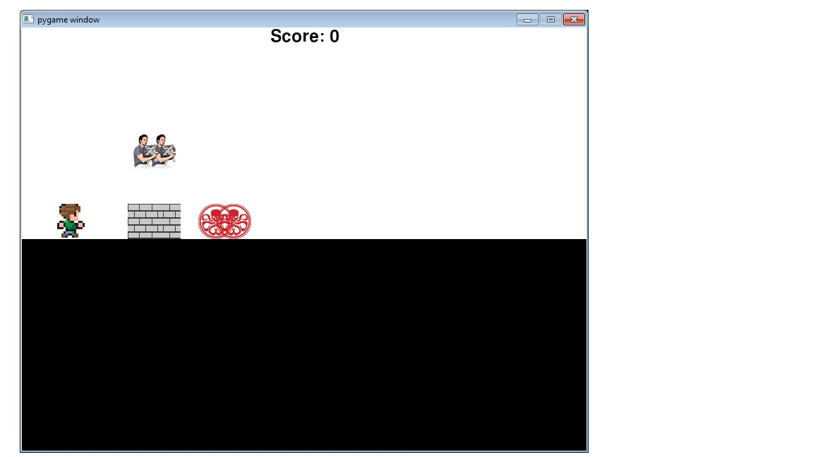

I used Python to make a program where with different controls a man would run around the screen and with another set of controls another character (Bucky) would act the same way. They cannot pass through stationary objects or run off the edge.
Concepts Learnt
creating classes
setting objects in places/drawing them on the screen
conditional statements
linking motion to contols
if/elif statements
Bringing in images
creating a screen/nackground/color/etc
location sensibility of objects so they dont run into other objects
Line Runner

Description:
I used Python to make a program where a character is controlled by the arrow keys to move. The player has to jump over moving obsticals across the screen to gain points. Extra points are awarded when catching Bucky, and lost when running into Hydra.
Concepts Learnt
creating classes
setting objects in places/drawing them on the screen
conditional statements
linking motion to contols
if/elif statements
creating a screen/nackground/color/etc
location sensibility of objects so they dont run into other objects